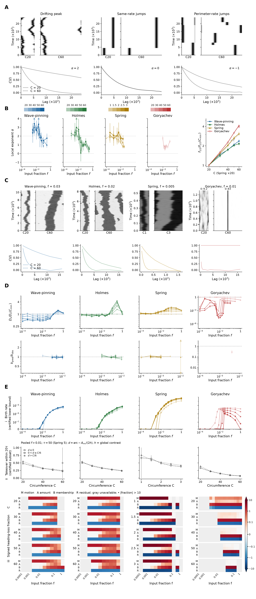

Generated 2026-10-23T18:44:57.898079+00:00. Analysis complete; reload manually to read newly generated files.
Main PDF · Full supplement · Methods · Results · Missing cases

A. Drifting peaks, same-rate null relocations and perimeter-rate null relocations give size exponents 2, 0 and −1. Null kymograph widths follow circumference; time increases upward. Autocorrelations C(ℓ) use solid C20 and dotted C60 curves. The null relocations are illustrative whole-peak moves, distinct from measured dominant-region replacements and birth-to-takeover events.
B. Larger rings retain heading across stronger fluctuating input. Input fraction f sets the ensemble mean to f times the native reference (Wave-pinning 0.1; Holmes 1; Spring 4; Goryachev 6.4). Input is positive lognormal, mean × exp(σZ−σ²/2), with unit-variance Gaussian driving field Z and σ=1. The spatial parameter ℓ and OU correlation time τ are 1.5 and 50 in chemical models; Spring uses basal-physical ℓ=0.15 and τ=5, with physical ℓ scaling with its changing circumference. Local size exponents α and noise-tolerance folds use model hues and light-to-dark circumference ramps. Open symbols in the exponent and drift panels identify conditions flagged as forced by the frozen matched-mean/lower-noise controls; open diamonds in the fold panel identify Goryachev irrespective of forcing; vertical intervals are pointwise 95% whole-history bootstrap intervals. Boundary triangles retain off-scale values. 125/260 local neighborhoods resolve, including 11 Goryachev neighborhoods. Largest-size tolerance folds are Wave-pinning 2.373, Holmes 2.155, Spring 3.088 and Goryachev 4.122. f₁/₂ is the first input crossing of C(ℓ)=0.5 at reference lag 2000 (Spring 200); Spring circumference is multiplied by 20 only in the fold panel.
C. Each model kymograph is rolled to place its initial activity-moment heading at the ring centre, to the nearest retained spatial bin. The two sizes share the existing selected input and replicate; the time window and raw evidence are unchanged. Activity scales are shared within Wave-pinning, Holmes and Spring. Goryachev uses a separate scale at each size: 0–9.2 at C20 and 0–83 at C60. Black outside ticks indicate persistent dominant-region replacements. Ensemble C(ℓ) below retains defined small- and large-size correlations. A low-contrast initial heading may have weak biological meaning even though the numerical roll is defined.
D. Physical within-tenure drift Dₛ is normalized by the smallest size at the same input. Unity gives the equal-physical-drift geometric expectation α=2. Weak-input log–log fits for f≤0.01 give exponents Wave-pinning 1.96–1.99; Holmes 1.94–1.95; Spring 1.87–1.93. The second row shows the existing event-based predicted/observed decay only where f≤0.01 and multiple regions occupy at most 5% of frames. 45/47 eligible point comparisons lie within 15% (Wave-pinning 16/16; Holmes 15/16; Spring 14/14; Goryachev 0/1). These point predictions assign the scored-event mean angular loss to unscored replacements; this remains an assumption. Goryachev uses separate logarithmic ordinate ranges: 10⁻⁷–2 for normalized drift and 0.003–3.3 for decay ratio; other models use 0.2–8 and 0.3–3.3. The actual mean circumference, C̄, enters physical-to-angular conversion. Figure 3D independently predicts this measured drift from deterministic edge responses.
E. i, Certified secondary-domain birth rates per actual perimeter-time. A new track must persist at least five saved frames, have an incumbent in the preceding frame, and have a conservative support enclosure disjoint from every preceding region. The curves are lower bounds, not estimates of all no-overlap births: original masks and parent IDs were discarded. All persistent secondary onsets, including unresolved splits, supply upper bounds in the supplement. Exact split counts are unavailable for all 260 conditions. ii, Probability of five-frame global dominance within a common follow-up of 20 noise correlation times (1000 chemical units; 100 Spring), conditional on certified no-parent births. Births with shorter available follow-up are excluded; pointwise 95% whole-history bootstrap intervals are shown. Designed inputs f>0.01 are pooled without input reweighting. Distance d is the shortest centroid arc minus the estimated incumbent half-width: the incumbent’s preceding-frame full-basin excess amount divided by twice the preceding-frame global contrast h. This is an explicit plateau approximation. Curves distinguish d≤0, 0<d≤C/6 and d>C/6; circumference bins use nominal size while exposure uses actual circumference. The Figure 2B–C asymmetry motivates measuring initiation and replacement separately. The observed takeover decline applies to this finite-horizon, certified subset; unequal certification prevents a population-level birth/takeover claim. iii, Exact signed allocation of eligible endpoint heading loss over each condition’s existing analysis lag: M, shared-region motion; A, shared-region amount; B, track membership changes; R, moment residual. Membership includes unclassified splits and mergers. Three-factor symmetric Shapley changes of the normalized point-region moment plus the measured-moment residual sum exactly to the observed moment change. Their projections sum to 1−cos Δθ. Signed pooled fractions sum to one and may be negative or exceed one; cancellations are retained. The residual includes within-region shape and amplitude, unresolved activity and diffuse background. The symmetric-log color scale is linear for |fraction|≤0.1 and spans −10 to 10; black dots mark values outside that range. Gray cells lack an eligible lag or valid endpoint/hybrid moments. These are convention-dependent descriptive allocations, not causal fractions.